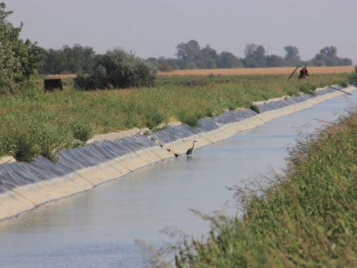

Az Öntözés Fontossága
Miért fontos az öntözés?
Az öntözés elengedhetetlen ahhoz, hogy a növények megkapják a megfelelő vízmennyiséget. A megfelelő öntözési rendszer biztosítja a növények fejlődését és a terméshozamot, különösen szárazabb időszakokban.
A víz segít a tápanyagok felszívódásában, és elengedhetetlen a növények egészségének fenntartásához.

Öntözés típusai
Az öntözési rendszerek különböző típusai közül választhatunk, attól függően, hogy milyen növényeket öntözünk és milyen területen dolgozunk. A leggyakoribb típusok:
- Sprinkler öntözés
- Drip öntözés
- Öntözőcsatornák
Galéria


